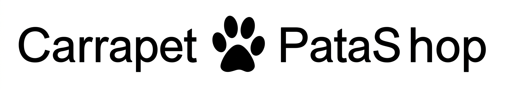

Home > Quem somos
Conheça o Carrapet Patashop
Quem somos
O Carrapet Patashop é um centro de estética e cuidado animal que une tecnologia e carinho para oferecer a melhor experiência aos pets de Nova Iguaçu. Também focado em saúde preventiva, o PATASHOP é capaz de realizar banhos terapêuticos, tosas personalizadas de acordo com a raça e monitoramento de bem-estar em tempo real. Seu atendimento premium foca na eliminação de parasitas e no conforto extremo, utilizando produtos hipoalergênicos de alta qualidade. Atualmente, o Carrapet Patashop encontra-se em expansão e já possui uma linha própria de acessórios exclusivos para cães e gatos. Além disso, a unidade registrou novos protocolos de segurança e higiene para garantir que seu melhor amigo receba um tratamento VIP em cada visita.

Carrapet Patashop
O melhor amigo do seu Pet
Nossas Conquistas
O CARRAPET PATASHOP não é apenas mais um petshop; somos referência em inovação. Em 2025, fomos honrados com o Troféu Pata de Ouro na categoria "Inovação e Tecnologia no Cuidado Animal", concedido pela Associação Fluminense de Estética Pet.
Esse prêmio reconheceu nosso exclusivo sistema de Banho Inteligente, que ajusta a temperatura da água e o tipo de shampoo automaticamente de acordo com o sensor de pele do pet, garantindo 0% de irritação.
- 2025: Vencedor do Troféu Pata de Ouro (Inovação).
- 2024: Selo de Qualidade "Pet Amigo" da Prefeitura de Nova Iguaçu.
- 2024: Destaque no Guia Melhores Tosadores do Rio de Janeiro.